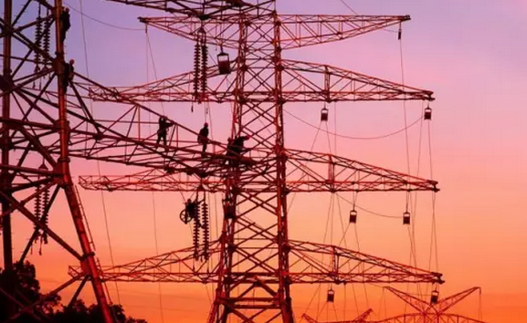
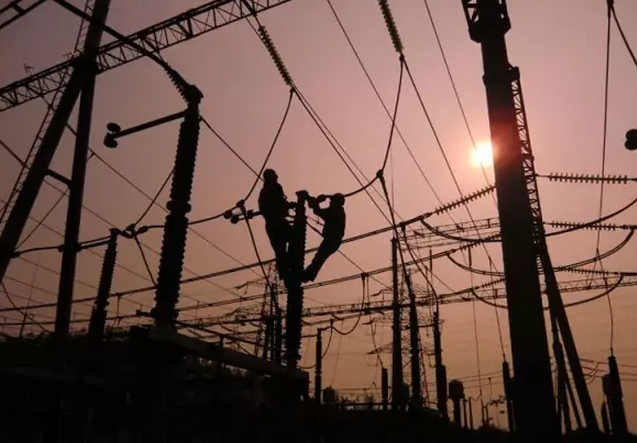

为香港“充电” 南方电网续写央企新传奇
你我都很熟悉的香港，是全球第三大金融中心，重要的国际金融、航运和贸易中心，与纽约、伦敦并称为“纽伦港”，是全球最自由经济体和最具竞争力城市之一。
你可能不太了解的是……
20年来……
南方电网公司以高度的政治责任感，认真贯彻落实中央关于保持香港长期繁荣稳定的要求，进一步深化两地电力企业的交流与合作，实现了对港安全可靠送电，助力香港政治稳定、经济繁荣。
累计输港电能337亿度
减排二氧化碳2700万吨

目前，南方电网与香港通过11回输电线路相联。大亚湾核电站每年将发电量的80%通过南方电网输送给香港，由广州抽水蓄能电站配合香港调峰，保障电网安全。
南方电网对港最大输电能力已达到160万千瓦。截至2016年底，大亚湾核电站通过南方电网累计向香港输电337亿千瓦时，约占其总用电量四分之一，约减少二氧化碳排放2700万吨
20年保供电安全平稳运行
为港提供临时电力紧急支援
220千伏水贝变电站建成于1983年2月6日，原称深圳变电站，它既是深圳首座220千伏变电站，又是当时广东电网与香港中电在深圳联网的首座220千伏联网站。该站历经多次重大改造，亲历了深圳电网的变迁，也见证了城市的进步。图为1989年扩容改造中的水贝变电站，远处的国贸依稀可辨。
随着深港两地经济往来日益密切，深圳开始了规模浩大的粤港联网工程，图为工程兵沿着当时的香港边防线建设电缆。
1997年香港回归保供电合影
20年来，香港经历了许多困难，每次遇到危机，中央政府都伸出援手帮助香港渡过难关。南方电网始终牢记肩负的责任，在保障香港可靠供电基础上，加大对港供电网架建设，建立紧急支援机制，助力香港社会经济发展稳定。
2015年，南方电网公司与香港电力供应商签订《能源输送协议》，约定在香港电力供应不足的情况下，对港实行不以盈利为目的的电能紧急支援，确保香港电力安全可靠供应
南方电网广州抽水蓄能电站为香港电网提供调峰填谷，调频、调压和事故备用服务，自1993年12月机组投产以来应急启动成功率达100%。
此外，南方电网公司还持有香港青山发电公司30%股权，香港中电持有青山发电70%股权。目前，青山发电公司拥有龙鼓滩、青山和竹篙湾3家发电厂，总装机容量达693.3万千瓦。南方电网公司已成为香港中电服务香港252万客户、近八成市民的重要合作伙伴。
建立粤港澳电力企业高峰会机制
优势互补助力绿色可持续发展
今年5月24日，第七届粤港澳电力企业高峰会在香港举行。南方电网公司党组书记、董事长李庆奎倡议，要不断提升高峰会平台价值和影响力，拓展更多更深合作领域，共同谋划粤港澳电力发展与合作的美好蓝图，打造粤港澳电力企业命运共同体，为推动粤港澳绿色可持续发展作出更大贡献。
据了解，粤港澳电力企业高峰会机制由南方电网公司倡议建立，得到香港中电、澳电的大力支持,首届峰会于2011年9月在澳门举行。2012年中国广核集团加入峰会。峰会机制在促进粤港澳区域电力资源优势互补、密切三地电力企业合作等方面发挥了重要的平台作用。
与香港中电联网的设备（摄于2012年）
南方电网深圳供电局运用无人机对线路进行巡视
特级保供电
全力保障香港回归祖国20周年庆典活动
6月29日，南方电网公司启动香港回归20周年庆典活动特级保供电工作。按照公司统一部署，6月29日至7月1日期间，南网相关单位按照特级保供电要求，从电网运行、设备安全、安防保卫及应急资源保障等方面全面落实各项保供电工作，同时启动应急值班和“零报告”机制，全力确保庆典活动期间电网安全稳定运行，保障粤港联网设备健康运行。
不忘初心继续前行！无论是二十年前肩挑背扛的赤诚，还是如今的高科技智能化操作，中国南方电网人都将以满腔热情，全力保障香港电力供应。